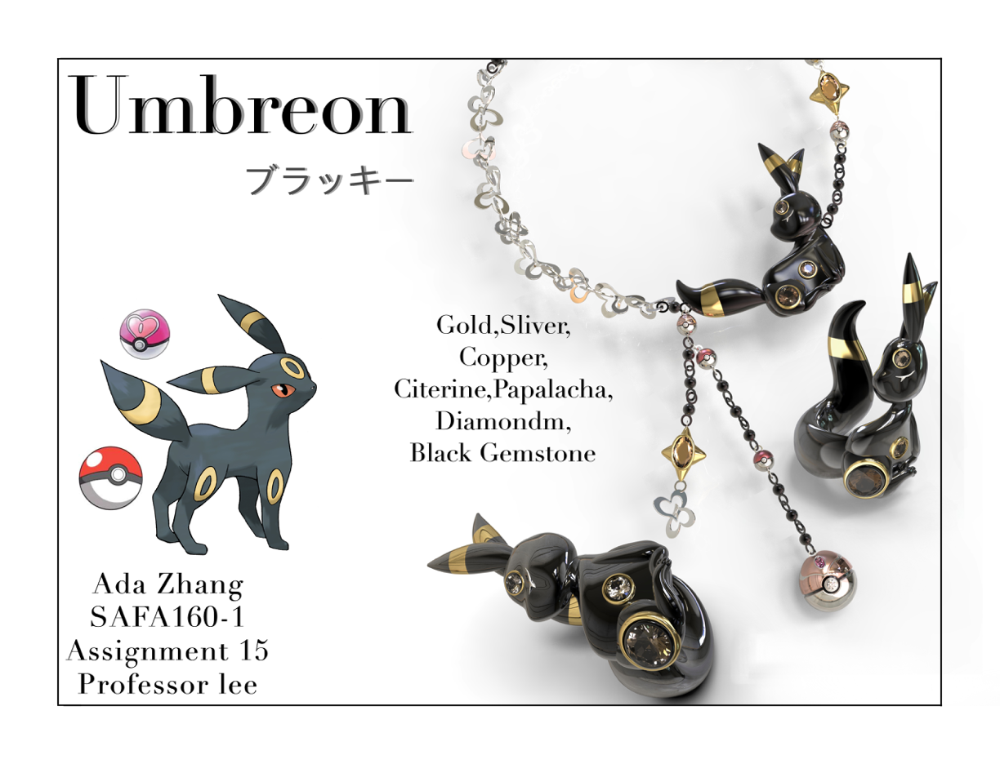
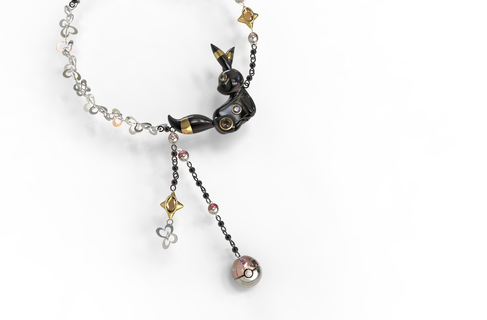

Other Work
Umbreon Jewelry Set
Jewelry · Object design

About the project
This jewelry set reinterprets Umbreon as two coordinated pieces: a ring and a necklace. Both designs share sculptural character forms, dark and gold-toned surfaces, and gemstone accents. Created in Rhino, the project explores how a consistent visual language can connect different jewelry forms while giving each piece its own composition.
Process
The most challenging part was building the curved surfaces in Rhino. The forms did not always develop as I imagined, and translating the character into three dimensions required repeated adjustments. Although the process was frustrating, seeing the completed renderings was deeply satisfying: both pieces finally came together in a way that felt close to my original idea.
